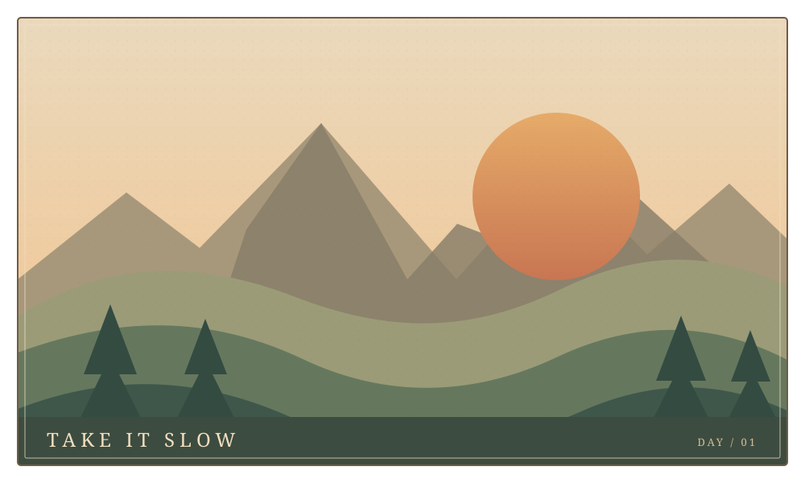

خطوة صغيرة كل يوم
يومك أحلى
بعاداتك.
مش لازم تعمل كل حاجة مرة واحدة. اختار عادة صغيرة وابدأ من هنا.

تقدم النهارده
0 من 4 عادات
ابدأ بأول عادة، والباقي هييجي واحدة واحدة.
قائمة اليوم
خطوة صغيرة كل يوم
مش لازم تعمل كل حاجة مرة واحدة. اختار عادة صغيرة وابدأ من هنا.

تقدم النهارده
ابدأ بأول عادة، والباقي هييجي واحدة واحدة.
قائمة اليوم